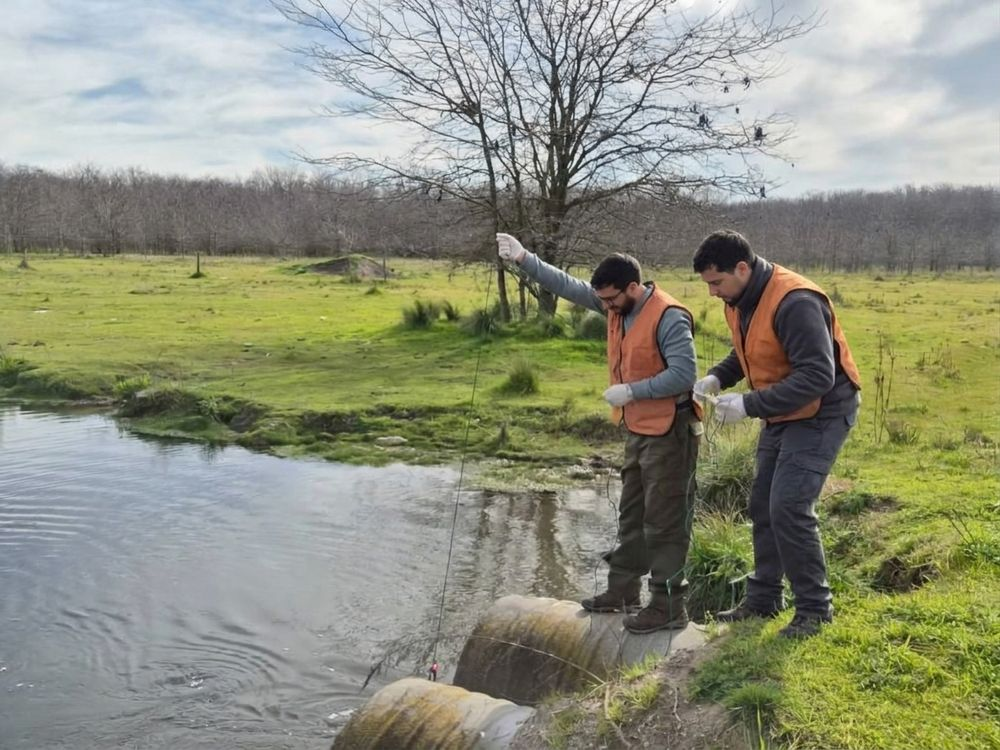

Evaluación ambiental de sitios
Estudios ambientales completos para identificar, caracterizar y cuantificar pasivos ambientales en sitios industriales, comerciales e institucionales. Seguimos los estándares de la ASTM y la normativa local vigente, con informes técnicamente sólidos y jurídicamente válidos ante los organismos de control. Desde la revisión histórica del sitio hasta el muestreo de suelos y aguas, cada etapa queda documentada para respaldar decisiones de remediación, compraventa de terrenos o cierre de instalaciones.
Estudios Fase I
- Identificación de pasivos ambientales con revisión histórica, entrevistas y reconocimiento de campo según ASTM E1527.
Estudios Fase II
- Muestreo sistemático de suelos y aguas subterráneas para caracterizar los contaminantes de preocupación.
Sitios potencialmente contaminados
- Evaluación integral con criterios normativos vigentes e informes técnicos para organismos de control.
